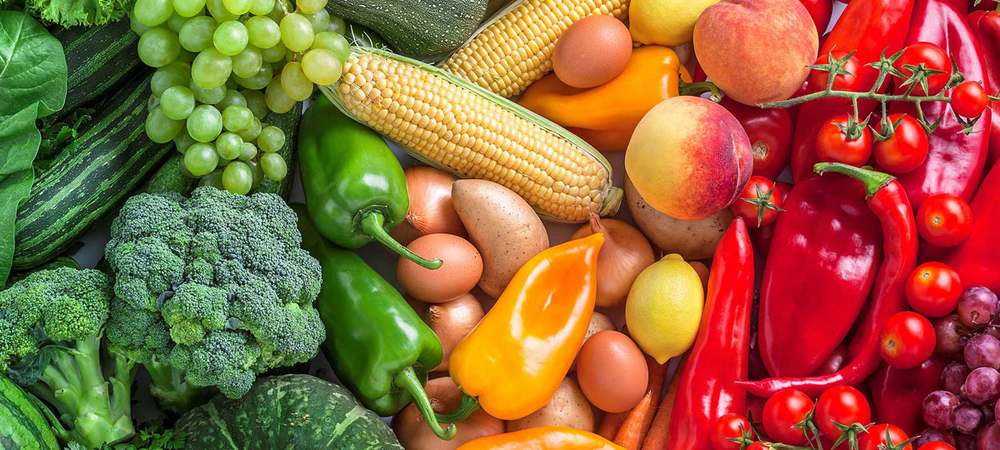

Productos Frescos
Directamente del campo a tu mesa, garantizando la máxima frescura y calidad en cada producto.
Conéctate con la naturaleza y lleva lo mejor del campo a tu mesa.
¡Únete a nosotros y disfruta de productos frescos y saludables, directo a tu hogar!

Directamente del campo a tu mesa, garantizando la máxima frescura y calidad en cada producto.
Entregamos en más de 9 puntos del país, incluyendo Santiago, Puerto Montt, Villarica y más.
Cultivados sin pesticidas ni químicos, promoviendo una alimentación saludable y sostenible.
Conectamos directamente con productores locales, apoyando la economía y comunidades rurales.
Frutas de temporada cultivadas en el punto óptimo de madurez para asegurar su sabor y frescura.

Verduras cultivadas sin pesticidas ni químicos, garantizando un sabor auténtico y natural.
Productos elaborados con ingredientes naturales y procesados de manera responsable.

Productos lácteos de granjas locales dedicadas a la producción responsable y de calidad.
"Los productos de HuertoHogar son increíblemente frescos. La diferencia se nota desde el primer bocado."
"Excelente servicio y productos de calidad. Ahora toda mi familia come más saludable."
"Me encanta poder apoyar a los productores locales mientras cuido mi alimentación."